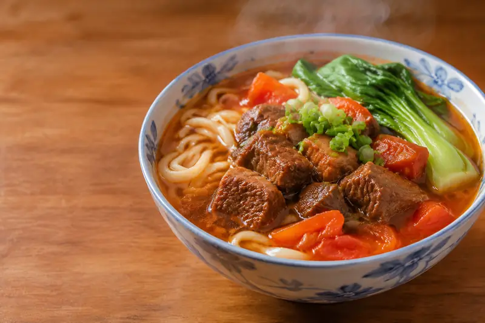

Staples主食
Wheat noodles挂面/面条
commonly stocked (not seen in this sample)Costco 常见（本次未见）
At Costco在 Costco
Typical pack常见规格: varies (instant noodle packs seen)不定（见到方便面）
Price varies; check the warehouse or costco.ca.价格随时变化，请看仓库或 costco.ca。
Sample date取样日期 2026-11-16. Availability varies by warehouse and season; this is not a stock guarantee.有无因门店和季节而异，不是库存保证。
Store and portion储存与分装
Keep dry goods sealed in a cool, dry place for months; cooked rice keeps 3-4 days chilled.干货放密封容器、阴凉干燥处，米面可放数月；熟饭冷藏最多 3–4 天。
Freeze cooked rice in single servings and sprinkle a little water before microwaving.熟饭按一份装盒冷冻，微波加热前洒一点水。
Per 100 g (Canadian Nutrient File)每 100 克（加拿大营养素数据库）
Pasta, egg noodles, enriched, dry · code 4512 · proxy match近似条目: Dry egg noodles as a stand-in for dry wheat noodles.以干鸡蛋面近似挂面。
385 kcal · protein蛋白 14.16 g · fat脂肪 4.44 g · carbs碳水 71.27 g · fibre纤维 3.3 g · sodium钠 21 mg
Egg鸡蛋Wheat / gluten小麦/麸质
Recipes with this用到它的菜

Braised Beef Noodle Soup红烧牛肉面140 min分钟 · 4 servings份 · Chinese home-style家常 Chicken Noodle Soup美式鸡肉蔬菜面汤50 min分钟 · 6 servings份 · Western西式Chongqing Spicy Noodles重庆小面18 min分钟 · 2 servings份 · Sichuan川Sesame Cold Noodles麻酱凉面17 min分钟 · 2 servings份 · Chinese home-style家常Dan Dan Noodles担担面27 min分钟 · 2 servings份 · Sichuan川Egg Fried Noodles鸡蛋炒面16 min分钟 · 2 servings份 · Chinese home-style家常Soy Sauce Fried Noodles豉油皇炒面22 min分钟 · 2 servings份 · Cantonese粤Scallion Oil Noodles葱油拌面26 min分钟 · 2 servings份 · Jiangnan江浙Shanghai Fried Noodles上海粗炒面27 min分钟 · 2 servings份 · Jiangnan江浙Taiwanese Beef Noodle Soup台湾红烧牛肉面195 min分钟 · 4 servings份 · Fujian / Taiwanese闽台
Chicken Noodle Soup美式鸡肉蔬菜面汤50 min分钟 · 6 servings份 · Western西式Chongqing Spicy Noodles重庆小面18 min分钟 · 2 servings份 · Sichuan川Sesame Cold Noodles麻酱凉面17 min分钟 · 2 servings份 · Chinese home-style家常Dan Dan Noodles担担面27 min分钟 · 2 servings份 · Sichuan川Egg Fried Noodles鸡蛋炒面16 min分钟 · 2 servings份 · Chinese home-style家常Soy Sauce Fried Noodles豉油皇炒面22 min分钟 · 2 servings份 · Cantonese粤Scallion Oil Noodles葱油拌面26 min分钟 · 2 servings份 · Jiangnan江浙Shanghai Fried Noodles上海粗炒面27 min分钟 · 2 servings份 · Jiangnan江浙Taiwanese Beef Noodle Soup台湾红烧牛肉面195 min分钟 · 4 servings份 · Fujian / Taiwanese闽台 Tomato and Egg Noodles西红柿鸡蛋打卤面30 min分钟 · 3 servings份 · Chinese home-style家常Tomato Beef Brisket Noodles番茄牛腩面115 min分钟 · 4 servings份 · Chinese home-style家常Beijing Zhajiang Noodles老北京炸酱面40 min分钟 · 3 servings份 · Chinese home-style家常
Tomato and Egg Noodles西红柿鸡蛋打卤面30 min分钟 · 3 servings份 · Chinese home-style家常Tomato Beef Brisket Noodles番茄牛腩面115 min分钟 · 4 servings份 · Chinese home-style家常Beijing Zhajiang Noodles老北京炸酱面40 min分钟 · 3 servings份 · Chinese home-style家常